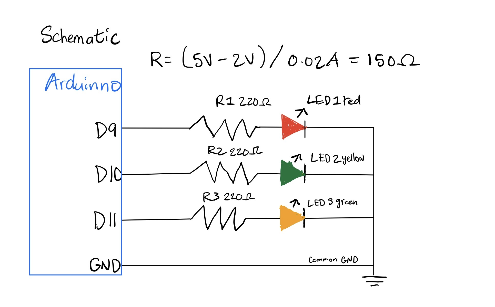
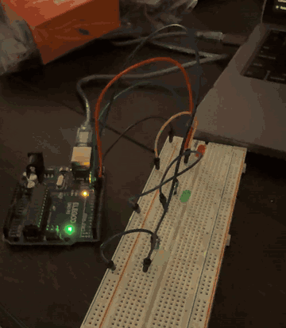
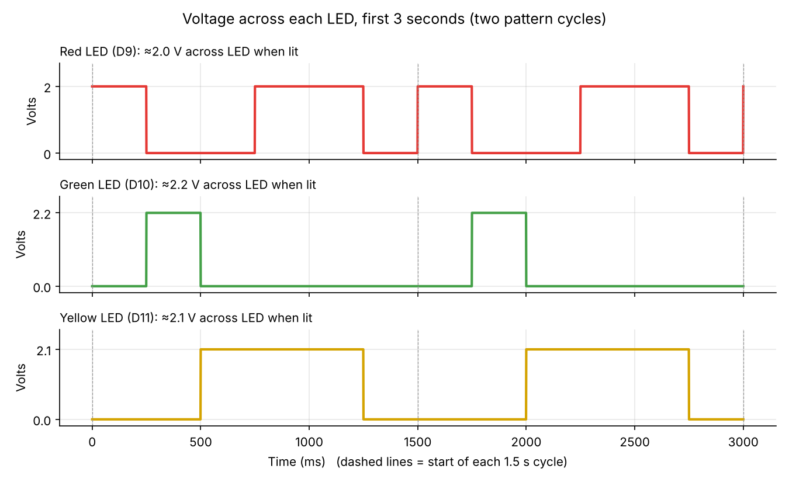

HCDE 439 Physical Computing
For our holiday light company's new pattern, I made a Holiday Chase: the light runs red → green → yellow down the string, then red and yellow flash together as an accent, everything goes dark for a beat, and the pattern repeats. Each step lasts 250 ms, so one full cycle takes 1.5 seconds. The chase gives the string a sense of motion, and the red-and-yellow accent adds a warm “sparkle” at the end of every run.

Using Ohm's law, the resistor has to drop whatever voltage the LED doesn't use:
R = (Vsupply − Vf) / I
The Arduino Uno's pins output 5 V. Typical forward voltages for standard 5 mm LEDs are about 2.0 V (red), 2.1 V (yellow) and 2.2 V (green). I used 20 mA as my current, because that's the maximum continuous current for a standard 5 mm LED and the recommended maximum for an Arduino pin. Plugging it in gives the smallest resistor that keeps the LED at or under 20 mA. The red LED has the lowest forward voltage, so it needs the biggest resistor and sets the requirement for all three:
Rmin = (5 V − 2.0 V) / 0.020 A = 150 Ω
Any resistor of 150 Ω or more is safe, since more resistance means less current. I used 220 Ω, the standard value in my kit. It's above the minimum, so the LEDs stay a bit under 20 mA, which gives a safety margin for parts that vary from their typical values while still being plenty bright. Checking the actual current with 220 Ω:
| LED | Vf | Current = (5 − Vf) / 220 Ω |
|---|---|---|
| Red | 2.0 V | 3.0 / 220 = 13.6 mA |
| Yellow | 2.1 V | 2.9 / 220 = 13.2 mA |
| Green | 2.2 V | 2.8 / 220 = 12.7 mA |
With all three lit at once the board supplies about 39.5 mA total, well within its limits.
The sketch steps through the pattern with digitalWrite() and delay(). Because every LED has its own pin, the code can turn each one on or off on its own: one at a time for the chase, or two at once for the accent flash. Changing the single WAIT value speeds up or slows down the whole pattern.
// Pin number for the red LED
const int RED_LED = 9;
// Pin number for the green LED
const int GREEN_LED = 10;
// Pin number for the yellow LED
const int YELLOW_LED = 11;
// How long (in milliseconds) each step of the pattern lasts
const int WAIT = 250;
// setup() runs once when the Arduino powers on or resets
void setup() {
// Set the red LED pin as an output so it can supply current
pinMode(RED_LED, OUTPUT);
// Set the green LED pin as an output so it can supply current
pinMode(GREEN_LED, OUTPUT);
// Set the yellow LED pin as an output so it can supply current
pinMode(YELLOW_LED, OUTPUT);
}
// loop() runs over and over forever after setup() finishes
void loop() {
// Turn the red LED on
digitalWrite(RED_LED, HIGH);
// Hold for one step
delay(WAIT);
// Turn the red LED off
digitalWrite(RED_LED, LOW);
// Turn the green LED on
digitalWrite(GREEN_LED, HIGH);
// Hold for one step
delay(WAIT);
// Turn the green LED off
digitalWrite(GREEN_LED, LOW);
// Turn the yellow LED on
digitalWrite(YELLOW_LED, HIGH);
// Hold for one step
delay(WAIT);
// Turn the yellow LED off
digitalWrite(YELLOW_LED, LOW);
// Turn the red and yellow LEDs on together for a "flash" accent
digitalWrite(RED_LED, HIGH);
// Yellow joins red for the accent
digitalWrite(YELLOW_LED, HIGH);
// Hold the accent for two steps
delay(WAIT * 2);
// Turn the red LED off to end the accent
digitalWrite(RED_LED, LOW);
// Turn the yellow LED off to end the accent
digitalWrite(YELLOW_LED, LOW);
// Pause with everything dark before the pattern repeats
delay(WAIT);
}


The Arduino Uno has 14 digital pins (D0–D13) plus 6 analog pins (A0–A5) that can also be used as digital outputs, so 20 LEDs can each have their own pin. (D0 and D1 are shared with USB serial, so if you need the Serial Monitor that drops to 18.)
The ATmega328P chip can safely handle: its datasheet limits the total current through the chip's VCC and GND pins to 200 mA (and 40 mA absolute maximum per pin). At my ~13.2 mA average per LED, 20 LEDs lit at once would draw about 20 × 13.2 mA ≈ 265 mA. To run all 20 safely you'd need larger resistors, e.g. 330 Ω gives about 9 mA each, or 180 mA total.
This is called the flicker fusion threshold. For most people it sits somewhere around 50–60 flashes per second in a typical indoor setting, and it varies with brightness, where the light falls in your field of vision (peripheral vision catches flicker more easily), and from person to person.
To test my own eyes, I wrote a small test sketch that blinks the red LED with equal on and off times that I could change by typing a number into the Serial Monitor, and I kept shrinking the time until the LED stopped looking like it was blinking. One full blink is on + off, so blinks per second = 1000 / (on + off). At 10 ms on / 10 ms off (50 blinks per second) I could barely see flickering, but at 8 ms on / 8 ms off (about 62 blinks per second) the LED was completely steady. So my own flicker fusion threshold is somewhere between 50 and 62 flashes per second.
I used AI to help me write in html and look up voltage information for this kit. Additionally to check grammar, syntax, and debug.